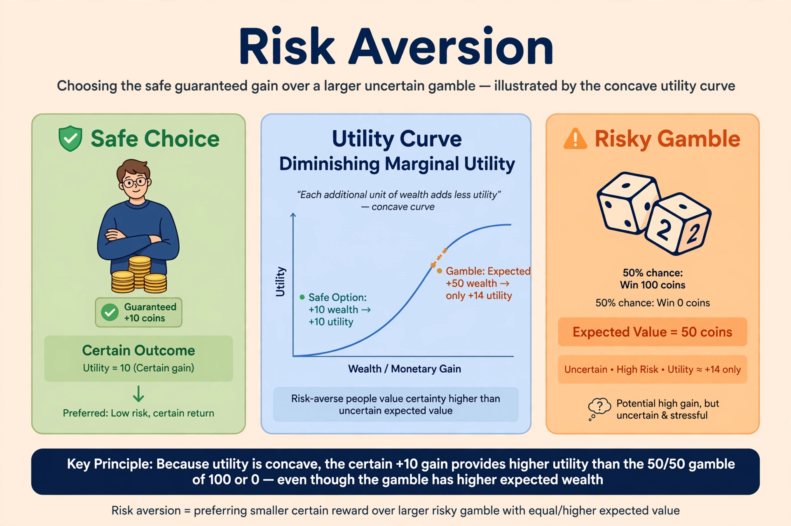

Risk aversion is a concept in economics and finance, based on the behaviour of humans (especially consumers and investors), who, when exposed to uncertainty, attempt to lower that uncertainty. It is the hesitancy of a person to agree to a situation with an unknown payoff rather than another situation with a more predictable payoff even though the predictable payoff may be lower in monetary value.

In expected utility theory, a risk-averse agent has a concave utility function: the marginal utility of wealth declines as wealth rises, so the person prefers a certain amount to a gamble with the same expected value. A risk-neutral agent is indifferent, and a risk-seeking (risk-loving) agent prefers the gamble. The degree of aversion is measured by the Arrow–Pratt coefficients of absolute and relative risk aversion.
Risk aversion explains demand for insurance, the equity premium puzzle (in part), and why investors require higher expected returns for riskier assets. It underlies portfolio theory and the pricing of risk in the capital asset pricing model.
Behavioural economics finds that aversion is context-dependent: people are often risk-averse for gains but risk-seeking for losses, as described by prospect theory, and loss aversion makes losses loom larger than equivalent gains.